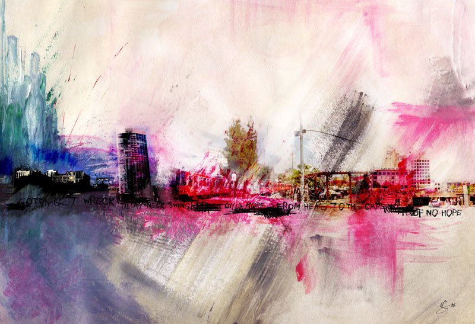
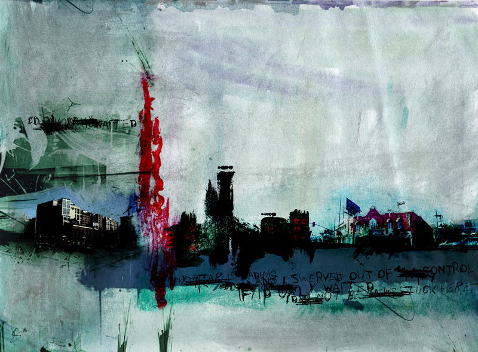
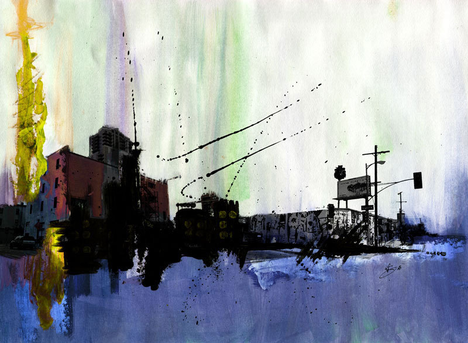
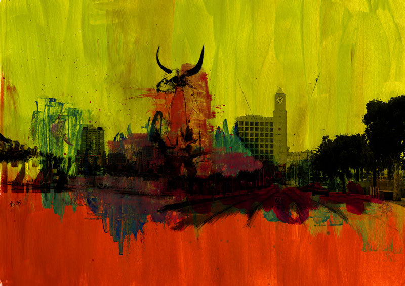
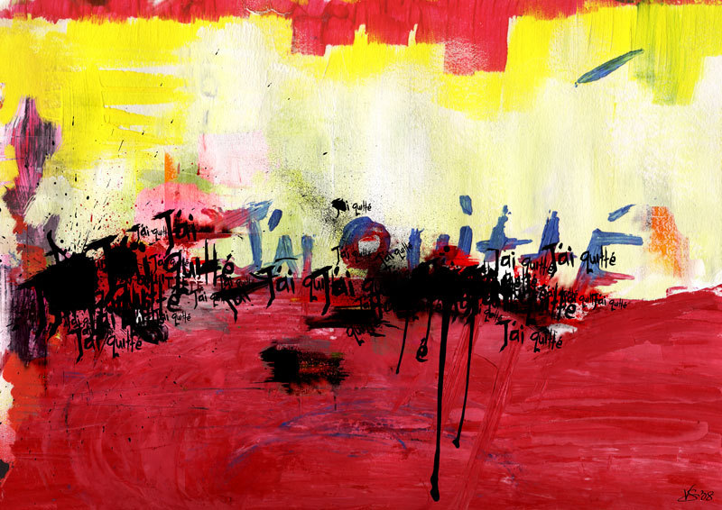
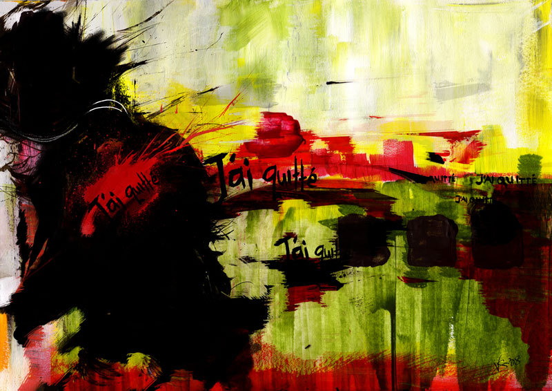

Tue, 24 Aug 2010 04:00:00 · Shanghai · SanDiego · Origins · Paintings · Vnsavitri · Urban
urban decay solo exhibition 2008 these are some






Urban Decay ~ Solo Exhibition 2008
These are some old collections of my paintings that was exhibited back in 2008 at Origin Gallery, Shanghai. Created using mix media on paper and canvas then digitally blown up. Some of the works above are now collected by some fans :-) ~ More info on Origin here: http://is.gd/eoRvL